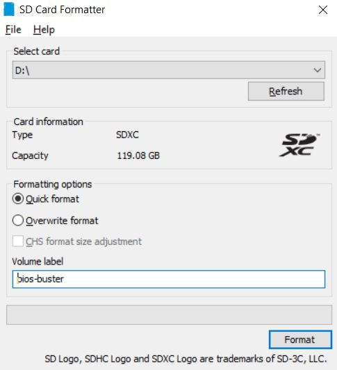
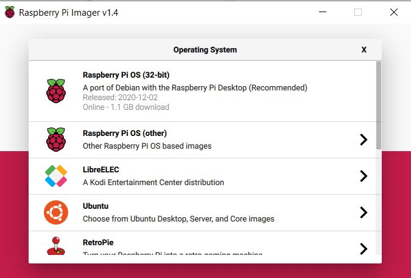
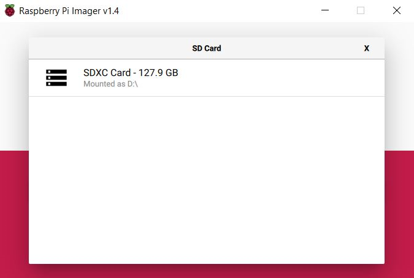
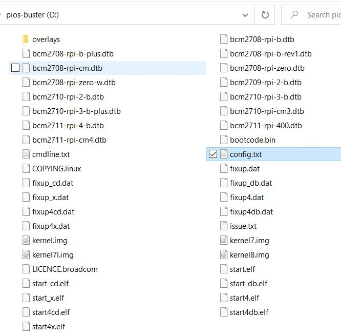

Install "Raspberry Pi OS with desktop" on Pi 400
Posted on December 14, 2020 in DevOps Updated: December 20, 2020
Intro
I wanted to use a Raspberry Pi 400 as a desktop alternative to a ChromeBook meaning a cheap PC mostly just for browsing the internet.
The price is approx EUR 140,-
- including
- shipping
- 128 GB SD Card
- excluding
- mouse
- monitor
This blog is about setting up the Pi and prepare a bootable SD Card from Windows.
Info:
- A Pi 400 is almost a Pi 4B with keyboard included and fixed 4GB RAM
- A Pi 4B typical bare-board active current consumption is just 600mA
HW
The Pi 400 comes with
- quad-core 64-bit ARM processor
- 4GB of RAM
- wireless networking
- dual-display output, and 4K video playback
- a 40-pin GPIO header
Apart from the Pi 400 I also bought
- Raspberry Pi 15.3W USB-C Power Supply
- USB Reader for microSD
- microSD card, 128 GB
- Monitor + hdmi cable
- micro hdmi to hdmi adapter
OS
Raspberry supplies two desktop OS's:
- Raspberry Pi OS with desktop and recommended software (Size: 2,949MB)
- Raspberry Pi OS with desktop (Size: 1,177MB)
Alternatively there is also a 3rd-party Ubuntu Desktop
I want to see if the minimal Pi without extra sw (#2 in the list) will be enough for my needs.
Info: According to Wikipedia Raspberry Pi OS is a Debian distru (as also is Ubuntu). This will do just fine.
The current Pi OS release August 2020 includes
- Debian:
10 (Buster) - Browser: Chromium
- GUI/Desktop: LXDE
- GCC (GNU Compiler Collection):
8.3 - Linux kernel:
5.4.51

(Image on ostoday.org)
On the download page there is also an integrety hash
# Powershell:
# Check file integrety hash
Get-Filehash -path C:\Users\<user>\Downloads\2020-12-02-raspios-buster-armhf.zip -algorithm SHA256
# Hash
# 32034189474585C521748A6A4B21388FDE9AE2C6B0C5C2D32F8ABFBF508EE865
Installation
OS
The OS installation steps I follow are mostly part of these articles: * Raspberry Pi NOOBS Setup * NOOBS - Raspberry Pi Documentation
Steps:
- Format your SD card:
- Download SD Memory Card Formatter 5.0 for SD/SDHC/SDXC
- Extract the setup from the zip
- Install
SD Card Formatter 5.0.1 Setup.exe - Insert the empty micro SD Card into SD Card adapter and insert it into PC SD Card slot
- Start
SD Card Formatter
 - Press Format
- Burn OS to SD card:
- Download Raspberry Pi Imager
- Install the Imager by running
imager_1.4.exe - Run the Imager
- Select OS
Raspberry Pi OS with desktop
 - Select SD card
 - Press
Write - This burn these files on the card:
 - In the config.txt there are settings you can modify:
# For more options and information see
# http://rpf.io/configtxt
# Some settings may impact device functionality. See link above for details
# uncomment if you get no picture on HDMI for a default "safe" mode
#hdmi_safe=1
# uncomment this if your display has a black border of unused pixels visible
# and your display can output without overscan
#disable_overscan=1
# uncomment the following to adjust overscan. Use positive numbers if console
# goes off screen, and negative if there is too much border
#overscan_left=16
#overscan_right=16
#overscan_top=16
#overscan_bottom=16
# uncomment to force a console size. By default it will be display's size minus
# overscan.
#framebuffer_width=1280
#framebuffer_height=720
# uncomment if hdmi display is not detected and composite is being output
#hdmi_force_hotplug=1
# uncomment to force a specific HDMI mode (this will force VGA)
#hdmi_group=1
#hdmi_mode=1
# uncomment to force a HDMI mode rather than DVI. This can make audio work in
# DMT (computer monitor) modes
#hdmi_drive=2
# uncomment to increase signal to HDMI, if you have interference, blanking, or
# no display
#config_hdmi_boost=4
# uncomment for composite PAL
#sdtv_mode=2
#uncomment to overclock the arm. 700 MHz is the default.
#arm_freq=800
# Uncomment some or all of these to enable the optional hardware interfaces
#dtparam=i2c_arm=on
#dtparam=i2s=on
#dtparam=spi=on
# Uncomment this to enable infrared communication.
#dtoverlay=gpio-ir,gpio_pin=17
#dtoverlay=gpio-ir-tx,gpio_pin=18
# Additional overlays and parameters are documented /boot/overlays/README
# Enable audio (loads snd_bcm2835)
dtparam=audio=on
[pi4]
# Enable DRM VC4 V3D driver on top of the dispmanx display stack
dtoverlay=vc4-fkms-v3d
max_framebuffers=2
[all]
#dtoverlay=vc4-fkms-v3d
- Boot the Pi:
- The card is auto dismounted by the app, so you can just take it out of the slot and put it into your Pi
- Plug in
SD Card,MonitorandMouse - Plug in
Power - Written on the screen:
Resized root filesystem booting in 5 sec - After boot it will start up the desktop
- According to Pi NOOBS Setup it uses
- Username:
pi - Psw:
raspberry - and starts the desktop with
startx
- Username:
- When you open the
File Managerit will tell you Free space: 109,2 GiB (Total: 116.9 GiB) - An app
Get Startedauto runs on first run.- Click
Next - Set Time Zone and Keyboard
- Set psw - unclick Hide characters, so you are sure the keyboards layout match your typing
- Select Wifi network and enter Wifi psw
- On the
Update Softwareyou might want to skip download system updates, but if you have time why not do it now
- Click
I tested running Youtube from the browser in the box: Chromium on a TV.
Sound and picture and responsivenes are all great.
It has to 4k hdmi ports, so you can have two monitors.
Enjoy.
Links
- Raspberry Pi Documentation
- Pi Apps
- Formatting an SDXC card for use with NOOBS - Raspberry Pi Documentation
- Wireless connectivity - Raspberry Pi Documentation
- Get help: Raspberry Pi Forums
The End